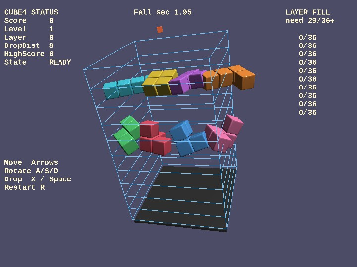

cube4
English | 日本語

概要
- webg ベースで作った 3D falling-block game です
- 6x6x10 の立体盤面へ polycube を落とし、一定以上埋まった layer を消しながら score を伸ばします
- WebgApp を入口にし、Shape / Primitive で床・ブロック・層ごとのワイヤーフレーム壁を構築しています
- camera は EyeRig の orbit 構成で、移動入力は camera yaw 基準で x / z 方向へ補正しています
- 開始前は自動落下せず、全ブロック種の回転デモを見ながら操作を確認できます
- ゲーム中は HUD を score / level / layer の 1 行へ絞り、開始前と game over 時だけ操作ガイドを表示します
- ghost 表示、next piece 表示、high score 保存、スクリーンショット、効果音、BGM を含む構成です
- layer clear は全面一致ではなく、1 層 36 マス中 29 マス以上で成立し、占有率に応じて得点が変わります
実行方法
- 実行ファイルは ./cube4.html です
- WebGPU に対応したブラウザで開き、必要に応じて help panel や HUD と合わせて確認してください
使用している webg 機能
- WebgApp: Screen / Shader / Space / Input / Message / progress 保存の標準初期化
- EyeRig(type="orbit"): 盤面全体を見る orbit camera
- Shape / Primitive: ブロック、床、台座、層ごとのワイヤーフレーム壁を生成
- Shape.createInstance(): block 形状の shared resource を再利用し、slot ごとに色と材質だけを切り替える
- Shape.setWireframe(true): 層壁をポリゴン辺ループの wireframe として表示
- Message: status と guide の HUD 表示
- GameAudioSynth: SE と BGM の再生
- takeScreenshot(): 画面キャプチャ保存
確認ポイント
- 立体盤面の周囲に、各層を囲うワイヤーフレーム壁が見え、ブロックがどの高さにあるか把握しやすいことを確認します
- 矢印キー移動が camera yaw 基準で補正され、見ている向きに対して自然な左右前後移動になることを確認します
- 開始前は自動落下せず、move / rotate / drop のいずれかで game が始まることを確認します
- ghost 表示が最終落下位置を示し、hard drop 後はその位置へ即座に固定されることを確認します
- layer が 29 マス以上埋まると clear され、埋まり具合に応じて score が増えることを確認します
- 開始前デモで 8 種の polycube が個別速度で回転し、ゲーム開始後は非表示になることを確認します
- score / level / layer の HUD、SE、BGM、high score 保存、スクリーンショットが連動して動くことを確認します
形状と描画負荷の見方
このサンプルは、多数の block を表示しながら Shape.createInstance() による mesh 共有の効果も確認できる構成です。diagnostics の vertexCount、triangleCount、nodeCount、shapeCount、meshCount を見ると、同じ見た目でも shape の作り方によって GPU へ渡す頂点数や mesh 数が大きく変わることが分かります。以下は block shape 構成ごとの代表値です。
- bevel 1段
vertexCount=42112
triangleCount=17824
nodeCount=429
shapeCount=417
meshCount=408
- bevel 3段
vertexCount=84128
triangleCount=37216
nodeCount=429
shapeCount=417
meshCount=408
- bevel 3段 + 共有頂点
vertexCount=23932
triangleCount=37216
nodeCount=429
shapeCount=417
meshCount=408
- bevel 3段 + 共有頂点 + instance化
vertexCount=391
triangleCount=508
nodeCount=429
shapeCount=417
meshCount=9
bevel を 1段から 3段へ増やすと triangle 数と vertex 数が増えますが、共有頂点化によって triangle 数を保ったまま vertex 数を大きく減らせます。さらに Shape.createInstance() で shared resource を再利用すると、scene にぶら下がる shapeCount や nodeCount はそのままでも、実際に build される mesh 数と頂点数を大幅に減らせます。
操作方法
- 矢印キー: camera 向き基準で移動
- A / S / D: X / Y / Z 軸回転
- X: 1 step down
- Space: hard drop
- P: pause
- R: restart
- K: screenshot
- B: block shape mode 切り替え
- T: desktop でタッチ controls の表示 / 非表示を切り替え
- タッチボタン: RX / RY / RZ / ⬇、← / → / ↑ / ↓、R